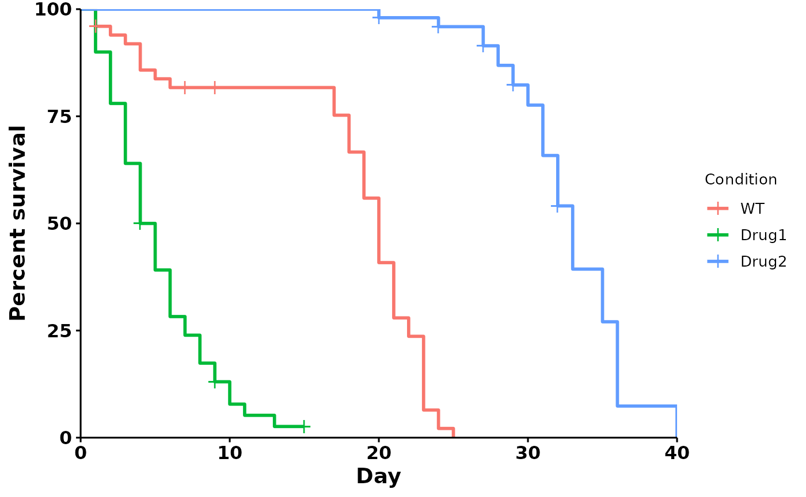
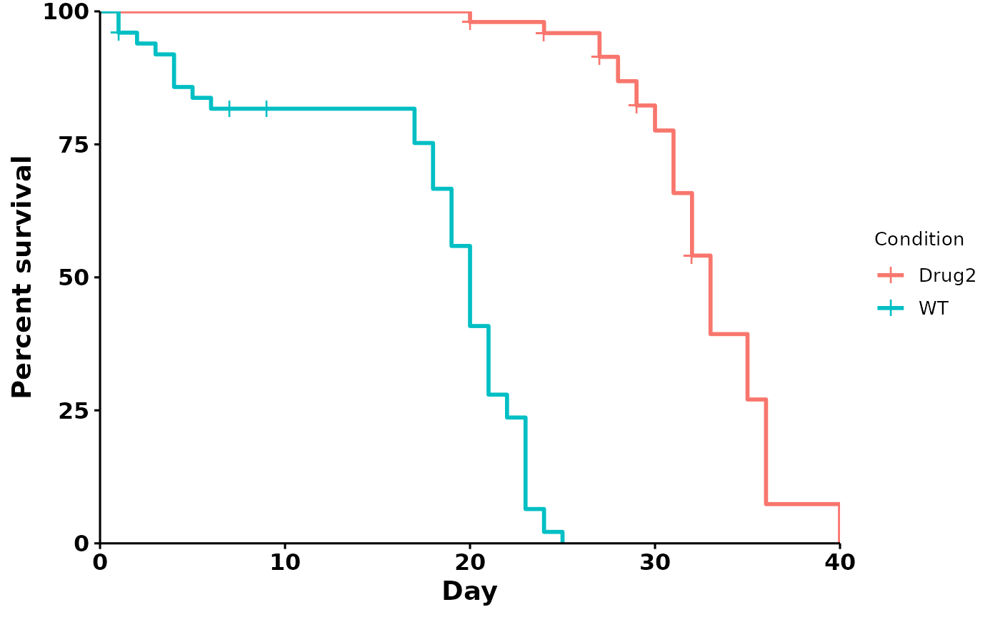
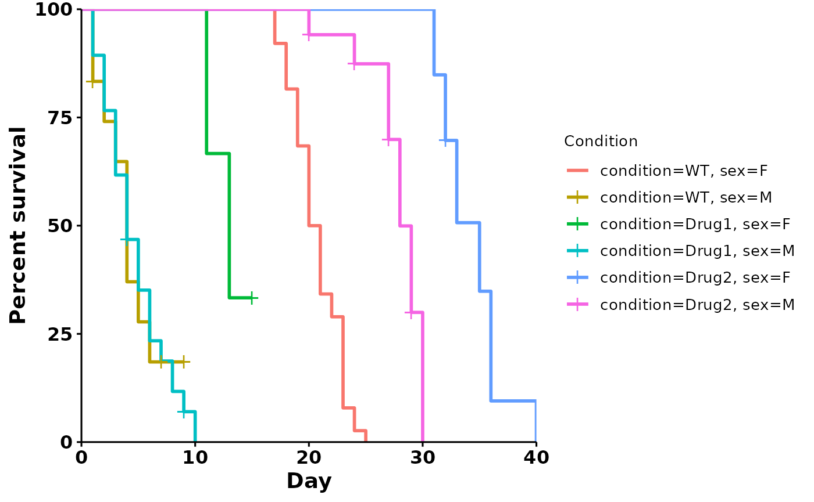
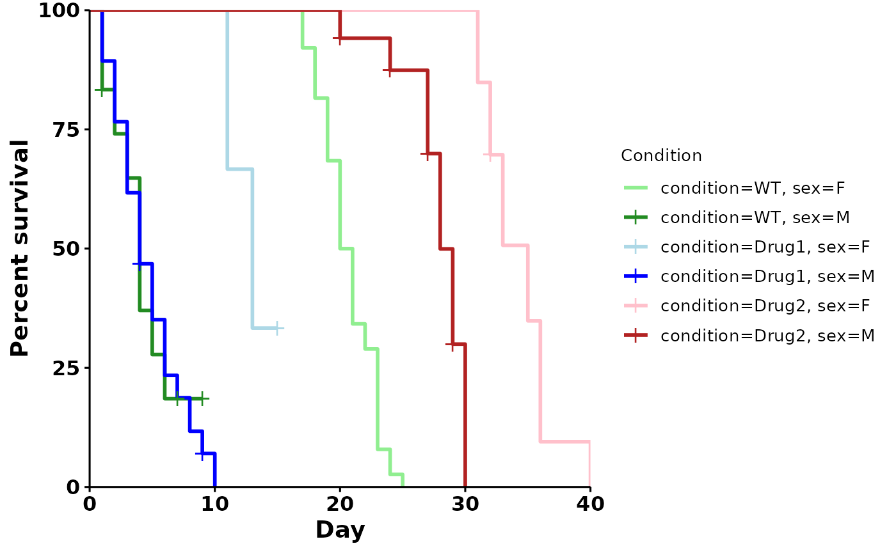
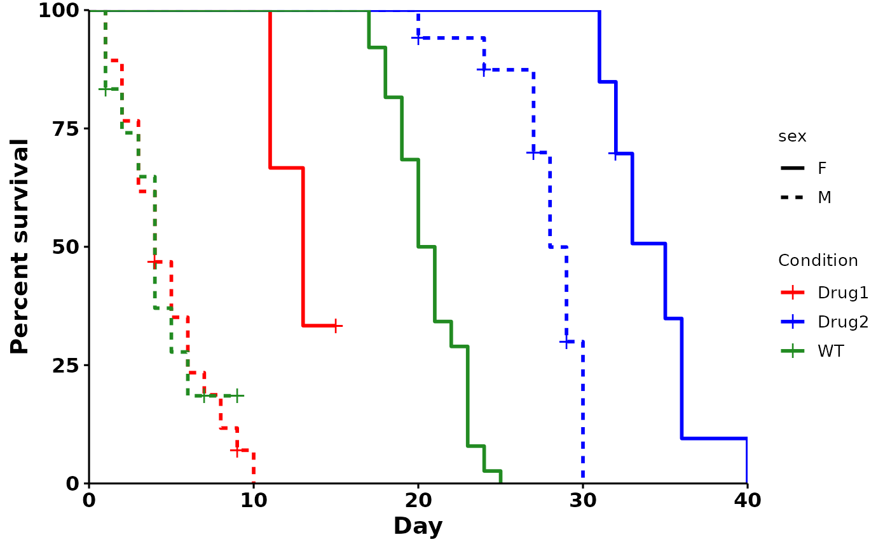

subset-and-reorder.RmdFor most survival analysis, a simple, one-variable formula is used.
Call: Surv(day, status) ~ condition
p <- run_bulksurv(sample_data)
#> Joining with `by = join_by(x, condition, day, sex, status)`
#> call: formula = Surv(day, status) ~ condition
To compare fewer conditions, change the sample_order
parameter.
Here, we subset AND invert the order:
p <- run_bulksurv(sample_data,
sample_order = c("Drug2", "WT"), # Compare WT vs Drug2, invert order
print_stats = FALSE)
#> Joining with `by = join_by(x, condition, day, sex, status)`
#> call: formula = Surv(day, status) ~ condition
Note: sample_order only works for reordering the
condition column. If you have a more complex design, an
error message will be shown.
What happens when we want to model the effect of condition (drug) and another variable, such as sex?
Let’s take a look at sample_data”
head(sample_data)
#> X condition day dead censored sex
#> 1 1 WT 0 0 0 M
#> 2 2 WT 1 2 1 M
#> 3 3 WT 2 1 0 M
#> 4 4 WT 3 1 0 M
#> 5 5 WT 4 3 0 M
#> 6 6 WT 5 1 0 MUse the formula parameter to specify a custom survival
formula.
p <- run_bulksurv(sample_data,
formula = "Surv(day, status) ~ condition + sex")
#> Joining with `by = join_by(x, condition, day, sex, status)`
#> call: formula = Surv(day, status) ~ condition + sex
We can use the palette parameter to specify custom
colors:
p <- run_bulksurv(sample_data,
formula = "Surv(day, status) ~ condition + sex",
# Specify colors
palette = c("lightgreen", "forestgreen",
"lightblue", "blue",
"pink", "firebrick"))
#> Joining with `by = join_by(x, condition, day, sex, status)`
#> call: formula = Surv(day, status) ~ condition + sex
We can further customize colors by groups in the data. Here, we color
by condition and split linetypes by sex.
p <- run_bulksurv(sample_data,
formula = "Surv(day, status) ~ condition + sex",
color = "condition",
linetype = "sex",
palette = c("red", "blue", "forestgreen"))
#> Joining with `by = join_by(x, condition, day, sex, status)`
#> call: formula = Surv(day, status) ~ condition + sex